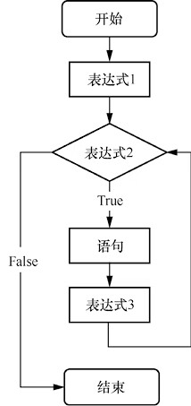
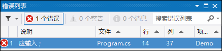

首页 > 编程笔记
C# for循环的用法（非常详细）
for 循环是 C# 中最常用、最灵活的一种循环结构，for 循环既能够用于循环次数已知的情况，又能够用于循环次数未知的情况。
本文将对 C# for 循环的使用进行详细讲解。
for 循环的流程图如图3所示。
C# for 循环最常用的格式如下：
在 for 循环中，“表达式1”一般用于为循环变量赋初值，若省略了“表达式1”，则需要在 for 循环的前面为循环条件赋初值，代码如下：
【常见错误】把上面的 for 循环语句改成 for( iNum <= 100; iNum ++) 后进行编译，会出现图4所示的错误提示。
出错是因为虽然可以省略“表达式1”，但是其后面的分号不能省略。
如果省略了“表达式2”，则循环没有终止条件，会无限地循环下去。针对这种使用方法，一般会配合 break 语句等来结束循环。
省略“表达式2”情况的举例：
例如，下面的代码在循环体中对循环变量的值进行了改变。
例如，下面的代码就会成为死循环，因为没有能够跳出循环的条件判断语句。
例如，在“表达式1”部分为变量iNum和iSum同时赋初值。
本文将对 C# for 循环的使用进行详细讲解。
C# for 循环的一般形式
C# for 循环的常用语法格式如下：
for(表达式1;表达式2;表达式3)
{
语句
}
for 循环的执行过程如下：
- 求解表达式1。
- 求解表达式2，若表达式2的值为 True，则执行循环体内的语句组，然后执行第3步；若值为 False，转到第5步。
- 求解表达式3。
- 转回到第2步。
- 循环结束，执行 for 循环后面的语句。
for 循环的流程图如图3所示。

图3：C# for 循环的流程图
图3：C# for 循环的流程图
C# for 循环最常用的格式如下：
for(循环变量赋初值;循环条件;循环变量增值)
{
语句组
}
使用 for 循环编写程序实现 1 到 100 的累加，代码如下：
static void Main(string[] args)
{
int iSum = 0; //记录每次累加后的结果
for (int iNum = 1; iNum <= 100; iNum++)
{
iSum += iNum; //把每次的iNum值累加到上次累加的结果中
}
Console.WriteLine("1到100的累加结果是" + iSum); //输出结果
Console.ReadLine();
}
代码注解
在上面的代码中，iNum 是循环变量，iNum 的初始值为 1，循环条件是 iNum<=100，每次循环结束都会对 iNum 进行累加。多学两招
可以把 for 循环改成 while 循环，语法格式如下：
表达式1;
while（表达式2）
{
语句组
表达式3;
}
C# for 循环的变体
for 循环在具体使用时，有很多种变体形式，例如，可以省略“表达式1”，或省略“表达式2”，或省略“表达式3”，或者3个表达式都省略。下面分别对 for 的常用变体形式进行讲解。1) 省略“表达式1”的情况
for 循环语句的一般格式中的“表达式1”可以省略。在 for 循环中，“表达式1”一般用于为循环变量赋初值，若省略了“表达式1”，则需要在 for 循环的前面为循环条件赋初值，代码如下：
for(;iNum <= 100; iNum++)
{
sum += iNum;
}
此时，需要在 for 循环之前为 iNum 这个循环变量赋初值。程序执行时，会跳过“表达式1”这一步，其他过程不变。【常见错误】把上面的 for 循环语句改成 for( iNum <= 100; iNum ++) 后进行编译，会出现图4所示的错误提示。

图4：使用 for 循环语句时缺少分号的错误提示
图4：使用 for 循环语句时缺少分号的错误提示
出错是因为虽然可以省略“表达式1”，但是其后面的分号不能省略。
2) 省略“表达式2”的情况
在使用 for 循环时，“表达式2”也可以省略。如果省略了“表达式2”，则循环没有终止条件，会无限地循环下去。针对这种使用方法，一般会配合 break 语句等来结束循环。
省略“表达式2”情况的举例：
for(iNum = 1;;iNum++)
{
iSum += iNum;
}
这种情况的 for 循环相当于以下 while 语句。
while(true) //条件永远为真
{
iSum += iNum;
iNum ++;
}
3) 省略“表达式3”的情况
在使用 for 循环时，“表达式3”也可以省略，但此时程序设计者应另外设法保证循环变量的改变。例如，下面的代码在循环体中对循环变量的值进行了改变。
for(iNum = 1; iNum<=100;)
{
iSum += iNum;
iNum ++;
}
此时，在 for 循环的循环体内，对 iNum 这个循环变量的值进行了改变，这样才能使程序随着循环的进行逐渐趋近并满足程序终止条件。程序在执行时，会跳过“表达式3”这一步，其他过程不变。
4) 3个表达式都省略的情况
C# for 循环语句中的 3 个表达式都可以省略，这种情况既没有对循环变量赋初值的操作，又没有循环条件，也没有改变循环变量的操作。这种情况下，同省略“表达式2”的情况类似，都需要配合使用 break 语句来结束循环，否则会造成死循环。例如，下面的代码就会成为死循环，因为没有能够跳出循环的条件判断语句。
int i = 100;
for(;;)
{
Console.WriteLine(i);
}
for 循环中逗号的应用
在 C# for 循环语句中，“表达式1”和“表达式3”部分都可以使用逗号分隔表达式，即包含一个以上的表达式时，中间用逗号间隔。例如，在“表达式1”部分为变量iNum和iSum同时赋初值。
for(iSum = 0, iNum = 1; iNum <= 100; iNum++)
{
iSum += iNum;
}
关注公众号「站长严长生」，在手机上阅读所有教程，随时随地都能学习。内含一款搜索神器，免费下载全网书籍和视频。

微信扫码关注公众号